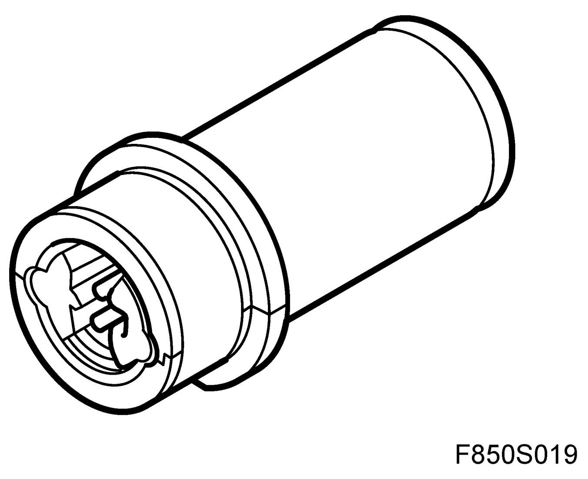
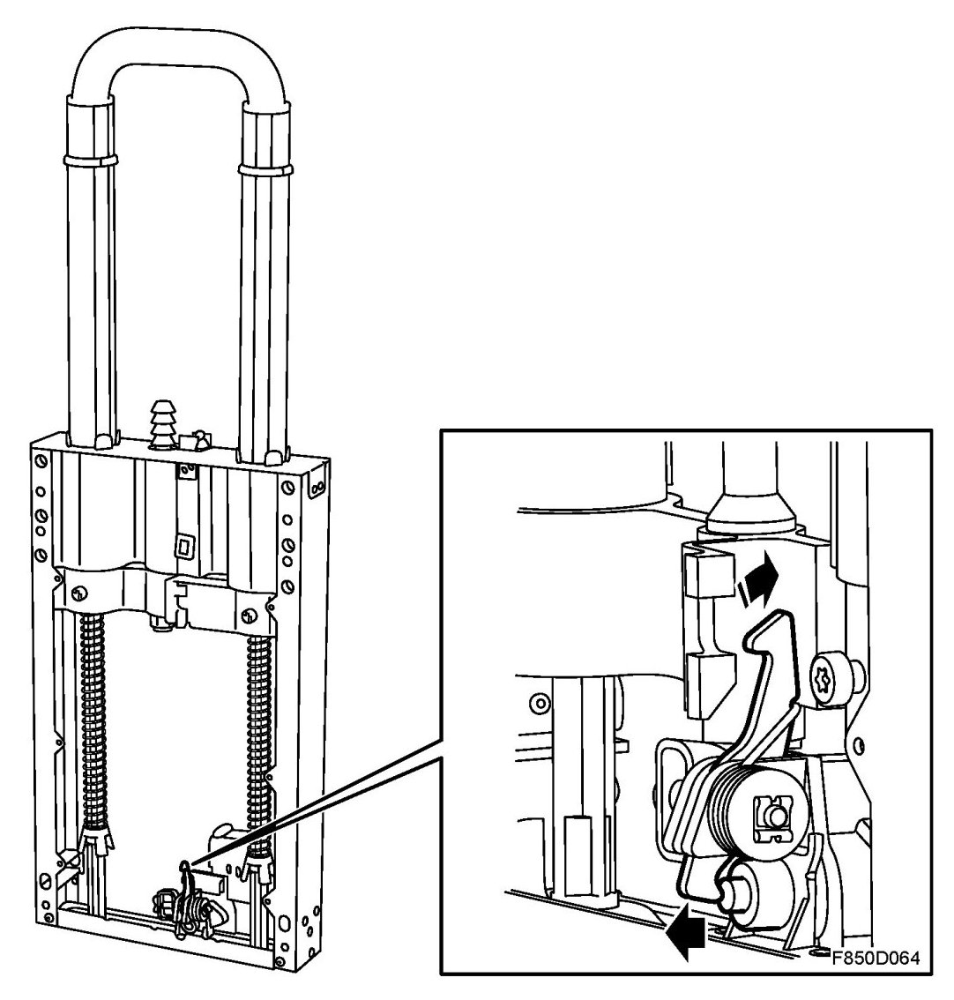
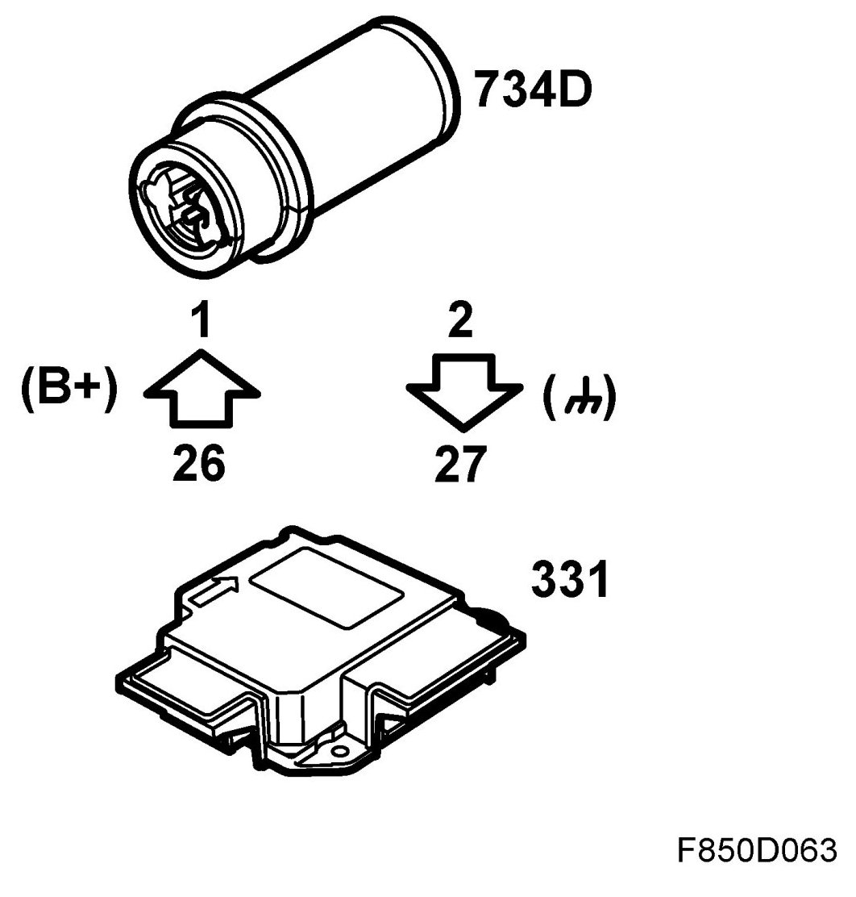
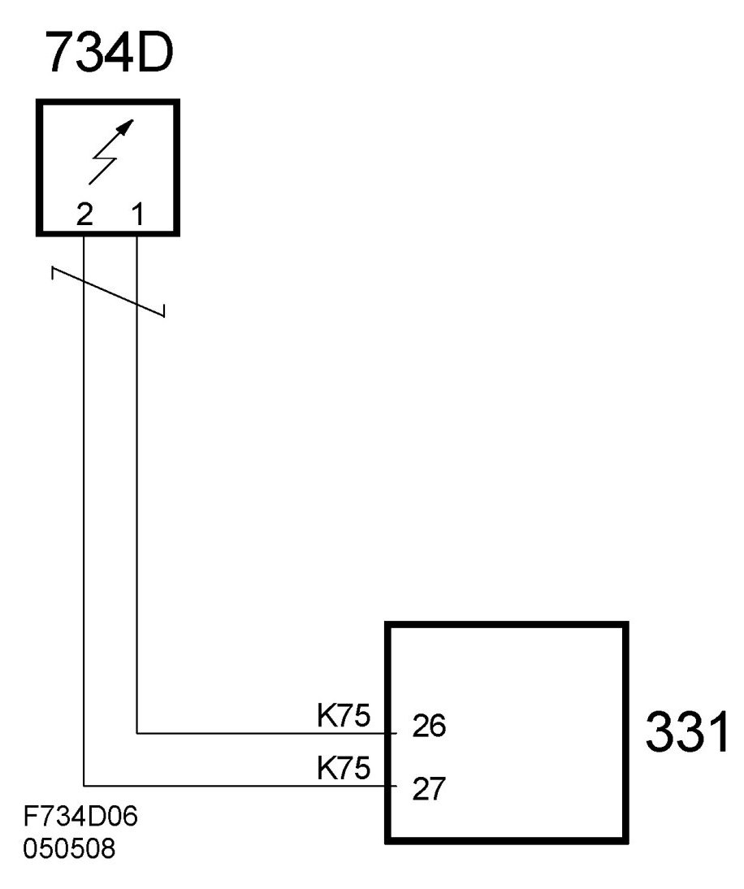
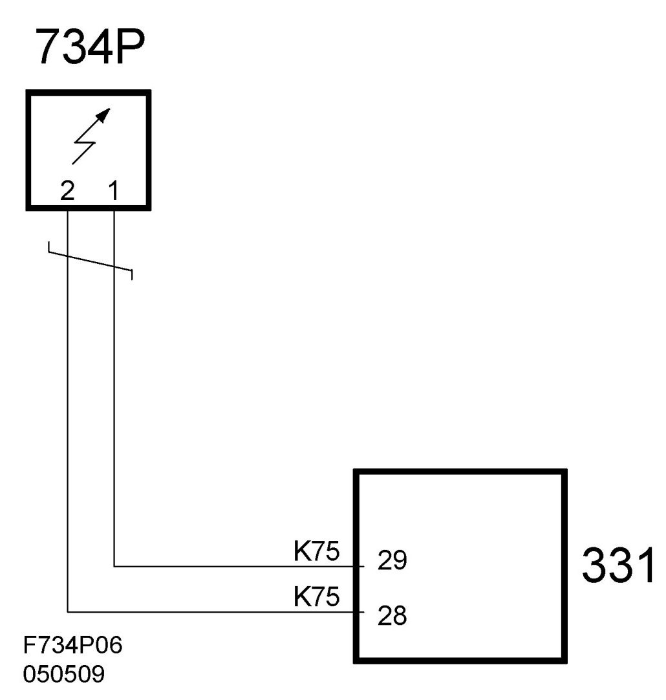

Roll Bar Triggering Solenoid: Description and Operation
Activation Unit, Protective Bow, Driver/passenger Side (734D/P)
Location

Main function

The activation unit is activated when the control module (ACM) receives information that the vehicle is beginning to roll. The activation unit releases the lower hook which holds the protective bow down in a pretensioned position, and the lock is opened. The protective bow extends under spring force.
Type
The activation unit contains an electric detonator with a pyrotechnic detonation set and a piston.
Connection
On activation, the driver's side activation unit (734D) is supplied with B+ from the airbag control module pin 26. The activation unit (734D) is grounded from control module pin 27.


On activation, the passenger's side activation unit (734P) is supplied with B+ from the airbag control module pin 29. The activation unit (734D) is grounded from control module pin 28.
